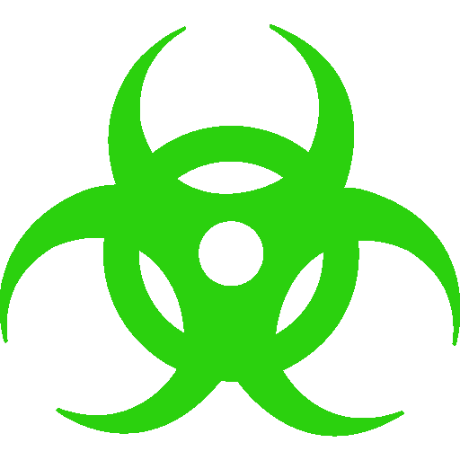

<div class="top-menu" (click)="toggleUpperMenu()">
  <button type="button" class="btn btn-primary btn-circle btn-sm"></button>24
  <button type="button" class="btn btn-warning btn-circle btn-sm"></button>24
  <button type="button" class="btn btn-dark btn-circle btn-sm"></button>24
  <button type="button" class="btn btn-danger btn-circle btn-sm"></button>24
  <div class="inline">0</div>
  <div class="inline">0</div>
</div>
<div class="top-menu2" [hidden]="hide">
</div>

